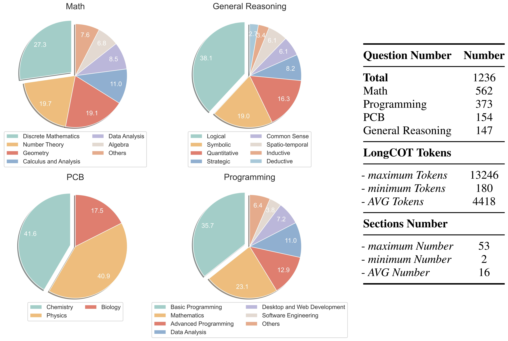

Recently, o1-like models have drawn significant attention, where these models produce the long Chain-of-Thought (CoT) reasoning steps to improve the reasoning abilities of existing Large Language Models (LLMs). In this paper, to understand the qualities of these long CoTs and measure the critique abilities of existing LLMs on these long CoTs, we introduce the DeltaBench including the generated long CoTs from different o1-like models (e.g., QwQ, DeepSeek-R1) for different reasoning tasks (e.g., Math, Code, General Reasoning), to measure the ability to Detect Errors in Long CoT ReAsoning. Based on DeltaBench, we first perform fine-grained analysis of the generated long CoTs to discover the effectiveness and efficiency of different o1-like models. Then, we conduct extensive evaluations of existing process reward models (PRMs) and critic models to detect the errors of each annotated process, which aims to investigate the boundaries and limitations of existing PRMs and critic models. Finally, we hope that DeltaBench could guide developers to better understand the long CoT reasoning abilities of their models.

DeltaBench is the first dataset to analyze the qualities of the long CoTs generated by o1-like models and evaluate the critique abilities to Detect Error in Long CoT ReAsoning of existing critic models and PRMs. Specifically, DeltaBench comprises 1,236 samples across diverse domains, including Math, Programming, PCB (physics, chemistry and biology), and General Reasoning. Each sample encompasses a problem, its corresponding long CoT solution, and comprehensive human annotations.

DeltaBench introduces the first dataset to analyze the qualities of the long CoTs generated by o1-like models and evaluate the critique abilities to Detect Error in Long CoT ReAsoning of existing critic models and PRMs. Specifically, in DeltaBench, we first collect a diverse collection of long CoTs generated by various o1-like models (i.e., QwQ, DeepSeek-R1, and Gemini-2.0 Flash Thinking) across different reasoning tasks such as Math, Programming, PCB (physics, chemistry and biology), and General Reasoning. Then, we divide each long CoT into different sections, where each section denotes an independent subtask, as shown in the figure below.

After that, each section includes the following tags:

| Model | Recall | Precision | F1 | Math F1 | Code F1 | PCB F1 | General F1 |
|---|---|---|---|---|---|---|---|
| Process Reward Models (PRMs) | |||||||
| Qwen2.5-Math-PRM-7B | 30.30 | 34.96 | 29.22 | 29.64 | 23.76 | 31.09 | 34.19 |
| Qwen2.5-Math-PRM-72B | 28.16 | 29.37 | 26.38 | 24.16 | 22.02 | 31.14 | 35.83 |
| Llama3.1-8B-PRM-Deepseek-Data | 11.7 | 15.59 | 12.02 | 12.28 | 10.95 | 16.76 | 12.59 |
| Llama3.1-8B-PRM-Mistral-Data | 9.64 | 11.21 | 9.45 | 9.40 | 10.72 | 13.43 | 12.40 |
| Skywork-o1-Qwen-2.5-1.5B | 3.32 | 3.84 | 3.07 | 1.30 | 6.66 | 5.43 | 7.87 |
| Skywork-o1-Qwen-2.5-7B | 2.49 | 2.22 | 2.17 | 0.78 | 6.28 | 6.02 | 3.11 |
| LLM as Critic Models | |||||||
| GPT-4-turbo-128k | 57.19 | 37.35 | 40.76 | 37.56 | 43.06 | 45.54 | 42.17 |
| GPT-4o-mini | 49.88 | 35.37 | 37.82 | 33.26 | 37.95 | 45.98 | 46.39 |
| Doubao-1.5-Pro | 39.68 | 37.02 | 35.25 | 32.46 | 39.47 | 33.53 | 37.00 |
| GPT-4o | 36.52 | 32.48 | 30.85 | 28.61 | 28.53 | 39.25 | 36.50 |
| Qwen2.5-Max | 36.11 | 30.82 | 30.49 | 26.73 | 32.81 | 39.49 | 29.54 |
| Gemini-1.5-pro | 35.51 | 30.32 | 29.59 | 26.56 | 28.20 | 40.13 | 33.66 |
| DeepSeek-V3 | 32.33 | 28.13 | 27.33 | 27.04 | 27.73 | 27.35 | 27.45 |
| Llama-3.1-70B-Instruct | 32.22 | 28.85 | 27.67 | 21.49 | 32.13 | 28.45 | 39.18 |
| Qwen2.5-32B-Instruct | 30.12 | 28.63 | 26.73 | 22.34 | 31.37 | 33.78 | 24.37 |
| DeepSeek-R1 | 29.20 | 32.66 | 28.43 | 24.17 | 29.28 | 34.78 | 35.87 |
| o1-preview | 27.92 | 30.59 | 26.97 | 22.19 | 28.09 | 33.11 | 35.94 |
| Qwen2.5-14B-Instruct | 26.64 | 27.27 | 24.73 | 21.51 | 29.05 | 29.98 | 20.59 |
| Llama-3.1-8B-Instruct | 25.71 | 28.01 | 24.91 | 18.12 | 32.17 | 27.30 | 29.93 |
| o1-mini | 22.90 | 22.90 | 19.89 | 16.71 | 21.70 | 20.37 | 26.94 |
| Qwen2.5-7B-Instruct | 21.99 | 19.61 | 18.63 | 11.61 | 25.92 | 29.85 | 15.18 |
| DeepSeek-R1-Distill-Qwen-32B | 17.19 | 18.65 | 16.28 | 13.02 | 23.55 | 15.05 | 11.56 |
| DeepSeek-R1-Distill-Qwen-14B | 12.81 | 14.54 | 12.55 | 9.40 | 18.36 | 10.44 | 12.01 |
Results of PRMs and critic models on DeltaBench. For each group of models, bold indicates the best results, while underline indicates the second best results.
@misc{he2025largelanguagemodelsdetect,
title={Can Large Language Models Detect Errors in Long Chain-of-Thought Reasoning?},
author={Yancheng He and Shilong Li and Jiaheng Liu and Weixun Wang and Xingyuan Bu and Ge Zhang and Zhongyuan Peng and Zhaoxiang Zhang and Zhicheng Zheng and Wenbo Su and Bo Zheng},
year={2025},
eprint={2502.19361},
archivePrefix={arXiv},
primaryClass={cs.CL},
url={https://arxiv.org/abs/2502.19361},
}